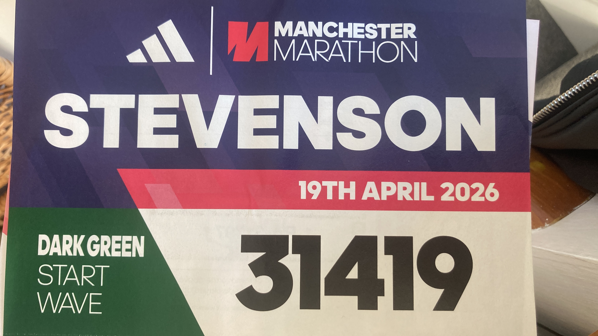
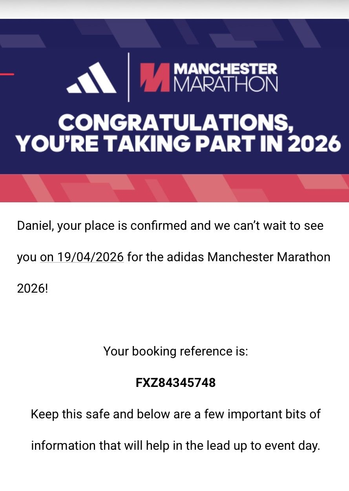

✕ CLOSE

Mile 20 is where the marathon starts. Everything before it is just the entry fee.— AyaanDanShenanigins
The official one. adidas Manchester Marathon, 19 April 2026. Bib 31419, Dark Green wave.
After a year of self-organised suffering: a real start line, a real crowd, a real finish. Both of us ran it. Dan crossed in 4 hours 26 minutes.
Somewhere around mile 20 the legs went and the cramps set in — but you don't stop on the official one. £100 raised for the British Heart Foundation. From an untrained marathon on the morning of prom to a sanctioned 26.2 with a number on the chest. Full circle.

From prom-morning chaos to an official start line. The loop, closed.
Donate via Tiltify